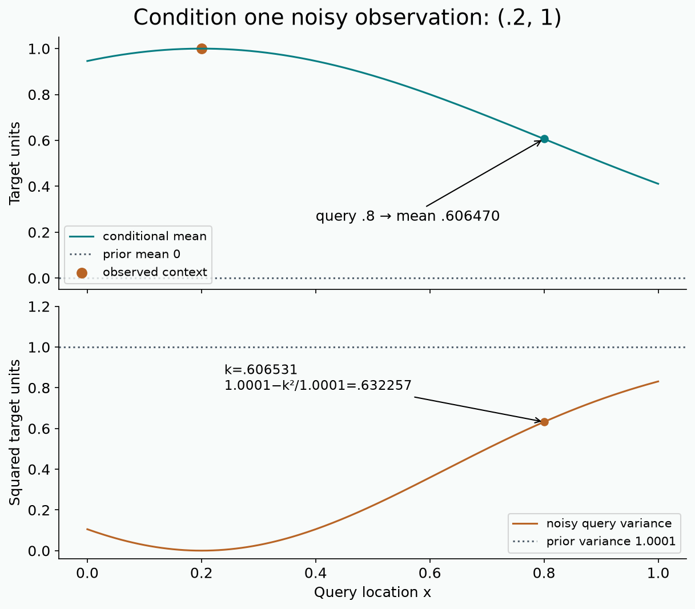

PFN computational reference

Five live operations¶
def sample_gp(batch,total,features,generator,lengthscale=.6,noise=1e-4,device='cpu'):— Return x:B×N×F and y:B×N. Sample uniform features, construct the noisy RBF covariance, factor in float64 and multiply a standard normal vector; return float32 on device. Reject nonpositive sizes/noise.def gp_posterior(x,context_y,n,lengthscale=.6,noise=1e-4):— Return float64 mean and marginal variance of observed query targets. Handle empty context and reject incompatible shapes. Use a Cholesky solve; add observation noise only to the appropriate diagonal blocks.def context_attention_mask(total,n,device='cpu'):— Return a total×total additive attention mask: zero where allowed, negative infinity elsewhere. Follow the original source including query self edges; reject n outside0…total−1.def attention_mix(q,k,v,mask):— For B×H×N×Dh projections, compute scaled dot products, masked row softmax and value aggregation. Return B×H×N×Dh.def riemann_nll(logits,y,borders):— Return elementwise NLL matching y. Validate shapes and increasing borders, identify bins, combine log-softmax masses with interior log widths and normalized half-normal tails.
Audit boundaries¶
Original row Transformer computation and full-support density are validated with copied nonzero weights and gradients. The local GP is one-dimensional with width 64,3 blocks,64 bins and2000 updates per seed. It learns useful conditioning but does not match the exact posterior. A separate oracle puts analytic GP masses into the same fixed head, revealing finite-head approximation error.
Measured predictions and raw task arrays · Fixed-head diagnostic · Validation evidence · Source inventory · Reproduction commands and exact gaps.
Paper v7 §§3–5.1, Appendices A–F · Original source commit 9c20031 · Gaussian conditioning derivation.
PFN inference reference¶
- Episode: one joint task draw, context D and held-out (x,y); query labels appear only in the loss.
- Objective: E[−log qφ(y|x,D)] = conditional entropy + expected KL(p || q).
- Fixed GP: x uniform in unit cube; k=exp(−distance²/(2·.6²)); output variance1; noise variance.0001.
- PPD for observed y: μ=Kqc C⁻¹yc; V=Kqq+σ²I−Kqc C⁻¹Kcq; use triangular solves.
- Original row token: Ex(x)+Ey(y) for context, Ex(x) for query. No position or unknown-target encoding.
- Original mask: all context columns and the diagonal; no other-query path at any layer.
- Block: postnorm attention residual, postnorm GELU FFN residual; zero initial output projections.
- Head: softmax masses; interior density p/width; weighted half-normal tails; finite-bin approximation persists.
- Evidence: three training seeds share 256 independent test tasks per context/regime. Seed SD and conditional paired-task t interval differ.
- Boundary: visible mechanism and local GP approximation are checked; full original Figure4 and other paper experiments remain unreproduced.